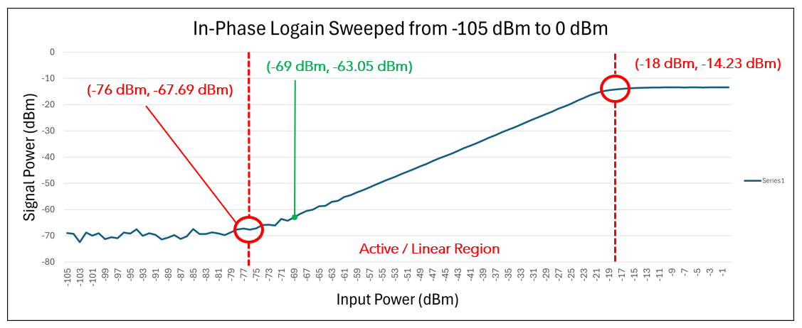

RSSI and Gain Linearity Check Using VBA for an Automotive Wireless SoC

-
Co-developed a Received Signal Strength Indicator (RSSI) Test and Gain Linearity Check
using VBA for an Automotive Wireless System-on-Chip (SoC), supporting
precise device characterization and enhancing signal integrity analysis.
-
Performed wafer-level and final testing using Automated Test Equipment (ATE),
ensuring compliance with semiconductor production and quality standards.
-
Collaborated with senior engineers within Analog Devices' innovation-driven
culture, contributing to technical documentation and process improvement initiatives.
Back to Projects